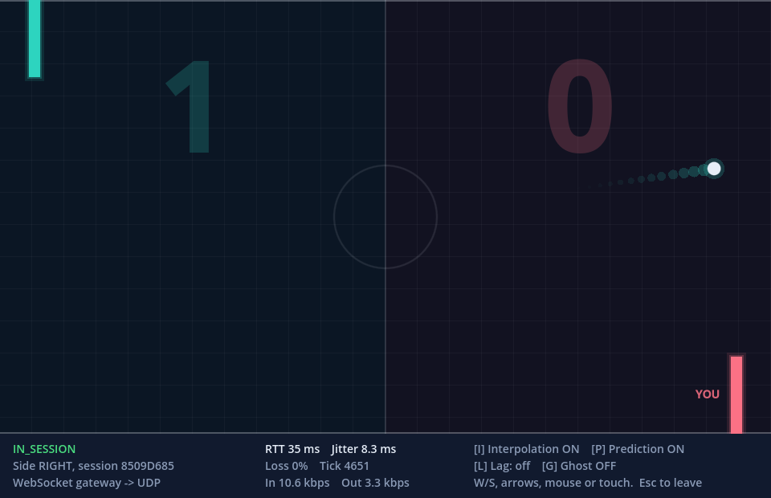
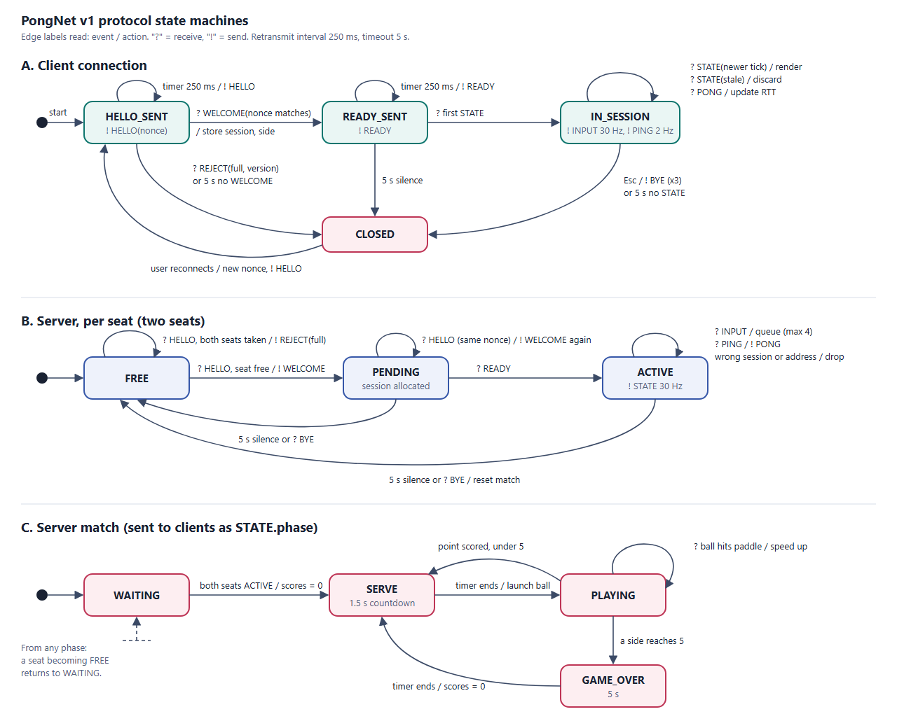

Play
This site only serves the game. The server and gateway run on the host's computer, so someone has to be hosting a match. On that computer, run demo.bat bot to play the bot, or demo.bat for two people.
Keep this address if you're on the computer running the match. Chrome will ask to access devices on your local network, so allow it. If that's blocked, use http://localhost:8000 instead, which demo.bat opens for you.
Letting other devices join
A page on HTTPS can only reach other machines through a secure wss:// address, so a tunnel has to provide one:
- On the host, run
cloudflared tunnel --url http://localhost:8765. - It prints an
https://….trycloudflare.comaddress. Enter it above, withhttpschanged towss. - While waiting for an opponent, the game shows a join link to share.
Controls
| Input | Action |
|---|---|
| W/S, arrows, mouse or touch | Move your paddle |
| Esc, then Enter | Leave with BYE, then reconnect |
| L | Cycle simulated lag and packet loss |
| P and I | Toggle client-side prediction and interpolation |
| G | Outline the raw server state |
How it works
The server owns the match. Clients send only a direction, and the server broadcasts complete state 30 times a second. Browsers can't open UDP sockets, so a gateway copies each browser's PongNet packets to UDP unchanged. The server just sees another UDP client.
Messages
Each message has a 12-byte header (magic, version, type, session, sequence), in network byte order.
| Message | Direction | Purpose | Bytes |
|---|---|---|---|
| HELLO | Client to server | Ask for a seat, with a nonce | 16 |
| WELCOME | Server to client | Assign a session and side | 18 |
| READY | Client to server | Finish the handshake | 12 |
| REJECT | Server to client | Match full or wrong version | 17 |
| INPUT | Client to server | Paddle direction, 30 times a second | 13 |
| STATE | Server to client | Complete game state, 30 times a second | 45 |
| PING and PONG | Both | Measure round-trip time | 16 |
| BYE | Client to server | Leave gracefully | 12 |
State machines

Netcode choices
The research question was which latency techniques are worth adding to a plain state broadcast. Press L in the game, then toggle P and I, to see the difference.
| Technique | Decision | Why |
|---|---|---|
| Client-side prediction and reconciliation | Used | Your paddle responds instantly and depends only on your own input. Near the ball it eases back to the server's position, so a hit or miss looks like what it was |
| Snapshot interpolation | Used | Smooth ball and opponent, at the cost of a 100 ms delay |
| Extrapolation | Rejected | The ball changes direction at every bounce |
| Rollback | Rejected | Built for peer-to-peer games, and here a server decides the outcome |